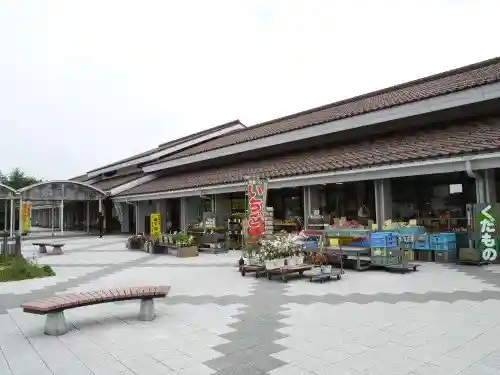
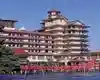
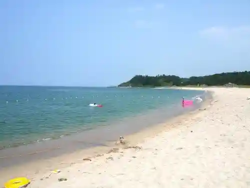
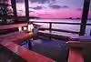

Roadside Station Hawai
Yurihama, Tottori · 0858-35-3933 · Official / source link

Hawai Onsen
Yurihama, Tottori · 0858-35-4052 · Official / source link

Togo Ike
Yurihama, Tottori · 0858-35-4052 · Official / source link
Hawai Beach
Yurihama, Tottori · 0858-35-4052 · Official / source link

Togo Onsen
Yurihama, Tottori · 0858-35-4052 · Official / source link

Guraundogorufu Village (Shiokaze no Oka Tomari)
Yurihama, Tottori · 0858-34-3217 · Official / source link
Chugoku Garden Encho Sono
Yurihama, Tottori · 0858-32-2180 · Official / source link
Nobana Baikei
Yurihama, Tottori · 0858-35-4052 · Official / source link
Shitori Shrine (Hoki Ichi no Miya)
Yurihama, Tottori · 0858-32-1985 · Official / source link
Fudo Taki
Yurihama, Tottori · 0858-35-4052 · Official / source link
Togo Nashi Senka Ba
Yurihama, Tottori · Official / source link
Togo Mizumi Hawai Rinkai Park
Yurihama, Tottori · 0858-32-2189 · Official / source link
Hawai Fudoki Kan
Yurihama, Tottori · 0858-35-2242 · Official / source link
Roadside Station Encho Sono
Yurihama, Tottori · 0858-32-2184 · Official / source link
Hawai Onsen Togo Onsen no Ashiyu
Yurihama, Tottori · Official / source link
Yu Ashisu Togo Ryuho Kaku
Yurihama, Tottori · 0858-32-2622 · Official / source link
Ima Taki
Yurihama, Tottori · 0858-35-4052 · Official / source link
Togo Lakeside no Rudikkuoku
Yurihama, Tottori · 0858-35-6161 · Official / source link
Uno Coast
Yurihama, Tottori · 0858-35-4052 · Official / source link
Hawai Yu Taun
Yurihama, Tottori · 0858-35-4919 · Official / source link
Nashi Kari Experience
Yurihama, Tottori · 0858-32-1821 · Official / source link
Shi Tsu Teami
Yurihama, Tottori · 0858-35-4052 · Official / source link
Togo Ike Shuhen Cherry Blossoms
Yurihama, Tottori · 0858-35-4052 · Official / source link
Nami Kan Sono
Yurihama, Tottori · 0858-32-1821 · Official / source link
Ayu Kaeri Falls
Yurihama, Tottori · 0858-35-4052 · Official / source link
Hashi Tsu no Han Kura
Yurihama, Tottori · 0858-35-4052 · Official / source link
Yokihi no Sasayaki
Yurihama, Tottori · 0858-32-2677 · Official / source link
San'in Togo
Yurihama, Tottori · 0858-32-2121 · Official / source link
Take Toro Workshop
Yurihama, Tottori · 080-8240-9893 · Official / source link